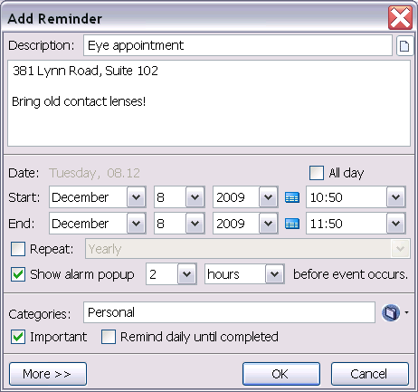
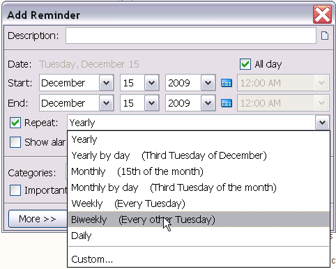
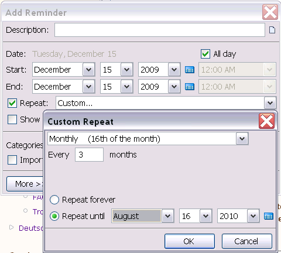
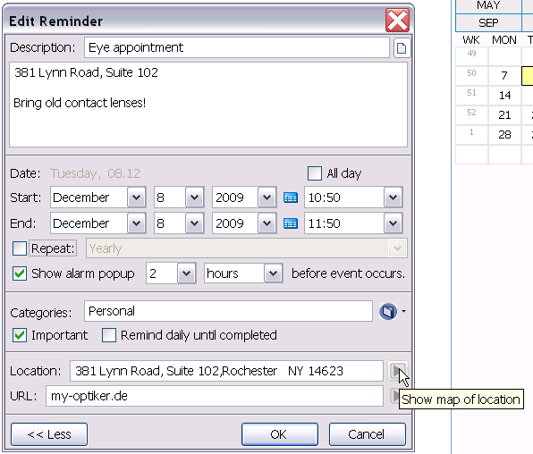

Adding Reminders
To add a new reminder to ReminderFox, use the 'Add Reminder' dialog. This dialog is brought up by first surfacing the main ReminderFox window by clicking on the ribbon in the status bar. Then, click the 'Add Reminder' button. Alternatively, you
may right-click on the ribbon and select 'Add Reminder...'.
Reminder Settings
Reminders have a number of different options that can be set to change their behavior.

- Description - This is the description of the reminder which shows up in your reminder list.
- Notes - If you click the Notes icon button, you can enter in additional notes for your reminder. These notes will show will also show up in the reminder tooltip when you hover over the item in the list. Tip: Add the current
time to a Note by pressing F8.
- Date - Set the date you want the reminder to occur. You can enter in any starting date. Note that you can also double click any date on the calendar widget to add a reminder for that date.
- Time - You can choose to have your reminder occur All Day (such as a birthday) or at a particular time (such as an appointment). If you uncheck the
All Day option you can enter a specific time. You can select
any time from the populated pull down list that contains the most common times. You can also type any time directly into the Time textbox for more specific times (example: 8:33 AM)
- Repeat - Leave this unchecked for one-off, non-repeating reminders -- example: "Return library book". If you check this option, then you can select the frequency you want for your reminder.
Learn about about the Repeat
Options.
- Show alarm popup - Check this option if you want to have a reminder notification alert you at a specified time prior to the event. You can select to have an alarm popup any number of minutes, hours, or days
before the reminder occurs. You can select any time from the pre-populated list of common times or directly enter any number into the textbox for more specific entries (37 minutes).
- Categories - Categories are used to associate to descriptive attributes to reminders. You can specify multiple categories per reminder separated by commas. The categories can be entered manually or selected by using the
drop-down menu. Choose from the provided categories or define your own categories by selecting 'Manage Categories'.
Learn more about Categories
- Important - This is for those extra-special events that you can't miss, like your wife's birthday. These reminders will show up highlighted in red in the Reminders list, as well as in the tooltip and status bar.
- Remind Daily Until Completed - This option causes the reminder to continue to remind you until it has been completed. This means that once a reminder occurs, it will continue to show up each following day until such time as
you mark the reminder as
Completed or delete it. This is useful for things where you want to keep reminding yourself until you actually do it, like "remember to call Mom".
Reminder Repeating
The 'Add Reminder' dialog provides an extremely flexible way of specifying repeating reminders. Use the 'Repeat' drop-down to specify the frequency of the reminder.
- Yearly - this event happens on the same date every year (like a birthday)
- Yearly by day - this event happens on the same day every year such as Mother's Day (Second Sunday of May)
- Monthly - this event happens on the same date every month (like a rent payment on the 30th of each month)
- Monthly by day - this event happens on the same day every month.
- Weekly - this event happens on the same day every week
- Biweekly - Alternating - this event happens every other week
- Custom - Select 'Click here for more repeat options...' to to specify any frequency that does not fit into the above categories. This option is extremely powerful, allowing for things such as 'Repeat on the 16th of the
month, every three months, until August 16th, 2010. 
More Button
Click the 'More>>' button to reveal some advanced options.

- Location - The location of an event meeting can be entered into the 'Event' textbox. The icon
 to the right of the location will open a
Google Map of the specified location when clicked.
to the right of the location will open a
Google Map of the specified location when clicked.
- URL - A URL can be entered into the URL textbox. Clicking the icon to the right of the textbox will open this URL in Firefox.
Edit Reminders
Ein Klick auf eine Zeile in der Termin/Aufgaben Liste öffnet das Bearbeitungsfenster.
Dies ist faktisch gleich dem Fenster zum Hinzufügen eines neuen Termins/Aufgabe.
Der Termin wird angezeigt und es sind nun alle vorher gewählten Optionen änderbar.
Das Kontextmenü einer Zeile in der Termin/Aufgaben Liste stellt eine Reihe
von Bearbeitungen zur Verfügung:

- Termin bearbeiten - Ermöglicht, die Eigenschaften der Termine zu ändern.
- Termin löschen - Löscht den Termin aus der Liste. Wenn es ein Termin mit Wiederholung ist, wird abgefragt, ob diese einzelne und die vorherigen Vorkommen (Instanzen) oder der gesamte Terminfolge gelöscht werden soll.
- In eine Liste verschieben - Verschiebt den gewählten Termin in jede andere Liste -- Aufgaben oder individuelle Listen.
- Wichtig - Umschalten der Bedeutung des Termins. Dies ist vorsehen für außergewöhnliche Ereignisse, die keinesfalls vergessen werden dürfen, z.B. der Geburtstag der Ehefrau. Diese Termine werden in der Terminliste, im Tooltip
und in der Statusleiste rot hervorgehoben.
- Beendet - Termine können als erledigt markiert werden. Diese werden dann nicht mehr in den Tooltip oder in der Statusleiste angezeigt.Beispiel: für einen Termin "Telefonrechnung bezahlen": wird vor dem Termin bezahlt,
dann
kann durch dieses Attribut markiert werden, dass es erledigt ist. Dadurch wird es nicht mehr in den "kommenden Terminen" angezeigt. Dieser "Erledigt"-Status gilt nur für diesen bearbeiteten Termin, so dass kommende Termine dieser Terminfolge
z.B. im nächsten Monat wieder angezeigt werden.
- Täglich erinnern bis zur Beendigung - Mit dieser Option wird der Termin solange wiederholt bis er erledigt ist. D.h. sobald der Termin einmal angezeigt wurde, wird er an jedem folgenden Tag angezeigt bis er als "erledigt"
markiert oder gelöscht wird. So wird man an Dinge erinnert bis sie wirklich getan sind (z.B. eine bestimmte Mail zu beantworten). Sobald die Aktion erledigt ist, wird der Termin mit Hilfe des Kontextmenüs oder in der Liste durch Umschalten als
erledigt markiert.
- Suchen - hiermit kann nach einem Termin mit einem bestimmten Text gesucht werden.
Siehe auch Filtern /Suchen der Ereignisse
- Terminfolgen ausblenden - Zeigt für alle Terminfolgen nur den nächst kommenden Termin. *\
- Terminfolgen anzeigen - Zeigt für alle Terminfolgen alle Termine in der Liste an. *\
- Verberge erledigte Termine - Dies verbirgt alle Termine, die als "Erledigt" markiert sind.*\*
Hinweis:
Dies ist nur gültig während der augenblicklichen Anzeige der Liste.
Siehe auch Options: Terminstandards für generelle Vorgabe
- Anzeigen und Drucken - Dies zeigt die Liste der Termine in einem Browser-Fenster in HTML Darstellung an. Mit Hilfe der Browser-Druckfunktionen lassen sich so die Listen ausdrucken.
- Termin senden .. - Hiermit können Termine per Mail versandt werden.
Siehe hierzu Austausch von Terminen und Aufgaben
 Reminders/Events
Reminders/Events